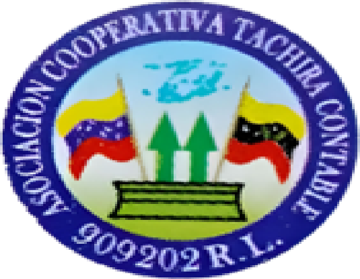

Software contable y tributario
Un sistema para llevar contabilidad, libros fiscales y declaraciones según la normativa venezolana.
ANDOX SOFTWARE lleva la contabilidad y las obligaciones ante el SENIAT de cada contribuyente: libros de IVA, retenciones, ISLR, ajuste por inflación e IGP.
Compatible con Windows 10 / 11 · 64 bits
Un sistema para llevar contabilidad, libros fiscales y declaraciones según la normativa venezolana.
Instalación y puesta en marcha del sistema, con la configuración del contribuyente y de los usuarios.
Orientación para usar cada módulo, apoyada en el manual de usuario del sistema.
Atención por teléfono y correo para resolver dudas del día a día.
Todos los módulos comparten los datos del contribuyente: una factura registrada una sola vez alimenta los libros fiscales, las retenciones y, con un comprobante, la contabilidad.
Para cumplir con el SENIAT día a día.
Para determinar y declarar el impuesto sobre la renta.
Para calcular el impuesto patrimonial.
Para llevar los libros y los estados financieros.
Para reexpresar los estados financieros.
Para administrar el sistema y recibir ayuda.
Descargue la versión demo y evalúe el sistema en su equipo. La descarga se abre desde Google Drive.
Estamos preparando un nuevo sistema administrativo que complementará al sistema contable y tributario. Pronto daremos más detalles.
Próximamente
ASOCIACIÓN COOPERATIVA TACHIRA CONTABLE 909202 R.L.
RIF J-31289082-7